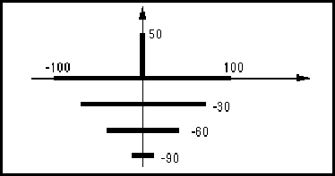

revision ::= '(' 'revision'
stringToken
')'
Revision is a string representing the particular revision. Revision refers to any change to the original drawing after that drawing has been released for use.
(revision "12A")
approvedDate companyName contract originalDrawingDate drawingDescription drawingIdentification drawingSize engineeringDate pageIdentification pageTitle
revisionDisplay ::= '(' 'revisionDisplay'
( addDisplay | replaceDisplay | removeDisplay )
')'
pageTitleBlockAttributeDisplay
RevisionDisplay is used to define display positions for revision. When used in the context of pageTitleBlock, it may add, replace or remove displays. Within the context of a template definition, only addDisplay may be used.
rightJustify ::= '(' 'rightJustify'
')'
RightJustify indicates that the X origin point of the text is at the right edge of the text bounding box. See verticalJustification for more details.
ripperHotspot ::= '(' 'ripperHotspot'
hotspotNameDef
hotspot
')'
A ripperHotspot is a hotspot which is defined in a schematicRipperTemplate and has a name, and so may be referenced specifically by ripperHotspotRef.
(ripperHotspot BUS_END
(hotspot (pt 10 10)
(schematicWireAffinity (wideWire))))
This is an example of a ripperHotspot representing the end of a schematicRipperTemplate to be connected to an interconnect with schematic wire style wideWire.
ripperHotspotRef ::= '(' 'ripperHotspotRef'
hotspotNameRef
schematicRipperImplementationRef
')'
schematicBusJoined schematicNetJoined
RipperHotspotRef is used to reference a ripperHotspot defined in a schematicRipperTemplate.
(ripperHotspotRef BUS_END (schematicRipperImplementationRef R1))
This example shows a reference to a ripper hotspot named BUS_END on a schematicRipperImplementation R1.
rotation ::= '(' 'rotation'
angleValue
')'
Rotation defines the counter-clockwise rotation to be applied as part of a transformation specified in transform.
(transform (origin (pt 0 0)) (rotation 90)) (transform (origin (pt 10 10)) (rotation 45))
round ::= '(' 'round'
')'
Round specifies that a corner type or end type are of type round. See cornerType and endType for details.
(cornerType (round))
rowSize ::= integerToken
RowSize indicates the size of each of the rows in a pixelPattern. See pixelPattern for an example. RowSize must be greater than zero.
scaledInteger ::= ( integerToken | e )
blue green numberOfBasicUnits numberOfNewUnits numberValue red unitExponent
ScaledInteger is the EDIF representation for real numbers.
1234 (e 100 1) (e 42 0) (e 9 -1) (e -12325 -3) (e -644 4)
The above examples represent the values 1234, 1000, 42, 0.9,
-12.325 and -6440000 respectively.
scaleX ::= '(' 'scaleX'
numerator
denominator
')'
ScaleX is used to scale in the x direction within transform. The scale fraction is specified as a numerator and denominator.
When not specified, the scaling is assumed to be 1, i.e. (scaleX 1 1) is the default. It has the effect of multiplying all x-coordinates by the given fraction, before any rotation implied by any associated rotation.
Scaling occurs relative to the origin of the object being transformed. For example, given (rectangle (pt -2 -2) (pt 2 2)), which is part of the cell view, and given the x scaling (scaleX 2 1), the figure would be scaled before translation to (rectangle (pt -4 -2) (pt 4 2)).
(instance Inst_1
(clusterRef CL1 (cellRef cell1)))
...
(schematicInstanceImplementation &123
(instanceRef Inst_1)
(schematicSymbolRef symbol)
(transform
(scaleX 2 1)
(scaleY 3 1)))
This example scales the cell by 2 in the x direction.
scaleY ::= '(' 'scaleY'
numerator
denominator
')'
ScaleY is used to scale in the y direction within transform. The scale fraction is specified as a numerator and denominator.
When not specified, the scaling is assumed to be 1, i.e. (scaleY 1 1) is the default. It has the effect of multiplying all y-coordinates by the given fraction, before any rotation implied by any associated rotation.
Scaling occurs relative to the origin of the object being transformed. For example, given (rectangle (pt -2 -2) (pt 2 2)), which is part of the cell view, and given the y scaling (scaleY 3 1), the figure would be scaled before translation to (rectangle (pt -2 -6) (pt 2 6)).
(instance Inst_1
(clusterRef CL1 (cellRef cell1)))
...
(schematicInstanceImplementation &123
(instanceRef Inst_1)
(schematicSymbolRef symbol)
(transform
(scaleX 2 1)
(scaleY 3 1)))
This example scales the cell by 3 in the y direction.
schematicBus ::= '(' 'schematicBus'
interconnectNameDef
signalGroupRef
schematicInterconnectHeader
schematicBusJoined
{ comment | <schematicBusDetails> | schematicBusSlice |
<schematicInterconnectAttributeDisplay> | userData }
')'
A schematicBus is a structured representation of the connectivity of a collection of signals.
SchematicBus has a name, interconnectNameDef. Its structure in terms of the signals it contains is defined by a reference to a signalGroup given by signalGroupRef. Its structure in terms of the ports that it connects together is given within schematicBusJoined.
The schematicSubBusses within schematicBusDetails further describe the structure of the connectivity in a manner analogous to schematicSubNet for schematicNet. Also, the structure may be further elaborated by using schematicBusSlice, which takes a subset of the signals of a schematicBus.
A schematicBus provides further information about the connectivity described in the signals that it contains. Each single-bit port referenced directly (as a single-bit port) or indirectly (via a portBundle) by the schematicBusJoined must also be referenced by the corresponding signal.
(logicalConnectivity ...
(signal A0
(signalJoined
(portInstanceRef P3_0
(instanceRef I1))
...))
(signal A1
(signalJoined
(portInstanceRef P3_1
(instanceRef I1))
...))
(signal A2
(signalJoined
(portInstanceRef P3_2
(instanceRef I1))
...))
(signal A3
(signalJoined
(portInstanceRef P3_3
(instanceRef I1))
...))
(signalGroup A
(signalList (signalRef A0) (signalRef A1)
(signalRef A2) (signalRef A3)))
..)
(schematicImplementation ...
(page &1 ...
(schematicBus BUS_A
(signalGroupRef A)
(schematicInterconnectHeader ...)
(schematicBusJoined
(portJoined
(portInstanceRef P3 (instanceRef I1)))
...)
(schematicBusDetails
(schematicBusGraphics
(figure BUS_GRAPHICS
(path
(pointList
(pt 100 200)
(pt 300 200)))))) ...) ...) ...)
In this example, there is an instance I1 with a portBundle P3 which is 4 bits wide. This instance portP3 is joined to schematicBus BUS_A, which is a schematicBus 4 bits wide. Notice that the signals contain the connectivity of the individual bits (P3_0, P3_1, P3_2 and P3_3) of the portBundle P3. The bus is implemented using a single line from (pt 100 200) to (pt 300 200).
connectivityNet signalGroup connectivityBus schematicBusGraphics
schematicBusDetails ::= '(' 'schematicBusDetails'
( schematicBusGraphics | schematicSubBusSet )
')'
schematicBus schematicBusSlice schematicSubBus
SchematicBusDetails specifies the details of a schematic bus, subbus or bus slice either as graphics, using schematicBusGraphics, or as a further set of subbusses using schematicSubBusSet .
schematicBusGraphics ::= '(' 'schematicBusGraphics'
{ comment | figure | schematicComplexFigure | userData }
')'
SchematicBusGraphics provides details of the graphical implementation of a schematic bus, bus slice or subbus.
Refer to the rules governing schematicNet for details of how the graphics must be structured.
(schematicBus BUS1 (signalGroupRef A)
(schematicInterconnectHeader ...)
(schematicBusJoined ...)
(schematicBusDetails
(schematicBusGraphics
(figure BUS_GRAPHICS
(path (pointList (pt 100 200)
(pt 300 200)))))
))
In this example, the bus BUS1 is implemented using a single line from (pt 100 200) to (pt 300 200).
schematicNetGraphics schematicBus schematicNet
schematicBusJoined ::= '(' 'schematicBusJoined'
portJoined
{ ripperHotspotRef | schematicGlobalPortImplementationRef |
schematicInterconnectTerminatorImplementationRef |
schematicJunctionImplementationRef |
schematicMasterPortImplementationRef |
schematicOffPageConnectorImplementationRef |
schematicOnPageConnectorImplementationRef |
schematicSymbolPortImplementationRef }
')'
schematicBus schematicBusSlice schematicSubBus
SchematicBusJoined lists all the ports and hotspots that are connected to the schematicBus, schematicBusSlice or schematicSubBus. It is analogous to schematicNetJoined in schematicNet.
The items referenced in portJoined must also be referenced in the corresponding signalJoined, i.e. for each wide port in the portJoined in schematicBusJoined there must be a reference to a single bit of that port in each of the signals in the flattened schematicBus or schematicBusSlice.
When used within schematicSubBus, the schematicBusJoined must be a subset of the schematicBusJoined of the immediately-enclosing schematicBus, schematicSubBus or schematicBusSlice.
(schematicBusJoined
(portJoined (portRef MP1) ...)
(ripperHotspotRef H1
(schematicRipperImplementationRef R1)))
In this example, the master port MP1 and one end of a schematicRipperImplementation R1 are joined to the schematicBus.
schematicNetJoined connectivityBusJoined
schematicBusSlice ::= '(' 'schematicBusSlice'
interconnectNameDef
signalGroupRef
schematicInterconnectHeader
schematicBusJoined
{ comment | <schematicBusDetails> | schematicBusSlice |
<schematicInterconnectAttributeDisplay> | userData }
')'
schematicBus schematicBusSlice schematicSubBus
A schematicBusSlice is used to define part of a schematicBus that has a width less than the width of the immediately-enclosing schematicBus, schematicBusSlice or schematicSubBus. A schematicBusSlice may be further subdivided into schematicBusSlices and schematicSubBusses.
It is possible to describe certain bus situations in two ways: as two separate busses associated with a ripper, or as a bus with a slice, with or without a ripper to associate the slice with its parent bus. The bus-slice mechanism should be used where the name of both busses in the original system is the same across the ripper, and where the signals on one side of a ripper are a contiguous subsequence of the signals on the other. This is reflected by the signalGroup referenced by the bus slice being a member of the signalGroup referenced by the enclosing bus or bus slice.
(signalGroup A0_1
(signalList (signalRef A0) (signalRef A1)))
(signalGroup A2_3
(signalList (signalRef A2) (signalRef A3)))
(signalGroup A
(signalList (signalRef A0_1) (signalRef A2_3)))
...
(schematicBus BUS_A
(signalGroupRef A)
(schematicInterconnectHeader ...)
(schematicBusJoined ...)
(schematicBusSlice A1
(signalGroupRef A0_1)
(schematicInterconnectHeader ...)
(schematicBusJoined ...)
(schematicBusDetails
(schematicBusGraphics
(figure BUS_GRAPHICS
(path (pointList (pt 100 200)
(pt 300 200)))))))
(schematicBusSlice A2
(signalGroupRef A2_3)
(schematicInterconnectHeader ...)
(schematicBusJoined ...) ...)
...)
In this example, the schematicBus BUS_A is subdivided into two schematicBusSlices A1 and A2. Each of these has two signals from the four-bit-wide schematicBus. In this case, there is no overlap between these signals, but there could be one or more signals common to the schematicBusSlices. SchematicBusSlice A1 is implemented with a line from (pt 100 200) to (pt 300 200).
schematicComplexFigure ::= '(' 'schematicComplexFigure'
schematicFigureMacroRef
transform
{ propertyDisplayOverride | propertyOverride }
')'
pageBorderTemplate pageCommentGraphics pageTitleBlockTemplate schematicBusGraphics schematicFigureMacro schematicGlobalPortTemplate schematicInterconnectTerminatorTemplate schematicJunctionTemplate schematicMasterPortTemplate schematicNetGraphics schematicOffPageConnectorTemplate schematicOnPageConnectorTemplate schematicRipperTemplate schematicSymbol schematicSymbolBorderTemplate schematicSymbolPortTemplate
SchematicComplexFigure is used to reference and position a schematicFigureMacro. This allows figures containing graphical entities to be defined once and used many times. The association between the figureGroup and the graphics is made in the schematicFigureMacro. ComplexGeometry is provided to associate graphics with a figureGroup at the time of instantiation.
(schematicComplexFigure (schematicFigureMacroRef BULLET) (transform (origin (pt 200 300))))
In this example, a schematicFigureMacro named BULLET is positioned at (pt 200 300).
schematicFigureMacro ::= '(' 'schematicFigureMacro'
libraryObjectNameDef
schematicTemplateHeader
{ annotate | comment | commentGraphics | figure | propertyDisplay |
schematicComplexFigure | userData }
')'
SchematicFigureMacro allows figures and annotation text to be defined for use in many places. A schematicFigureMacro may make use of previously-defined schematicFigureMacros.
(schematicFigureMacro BULLET
(schematicTemplateHeader ...)
(figure GRAPHICS
(shape
(curve
(arc (pt 0 -50) (numberPoint -50 0) (pt 0 50))
(arc (pt 200 50) (numberPoint 250 0)
(pt 200 -50))))))
This example shows the definition of a bullet shape, as shown below.
schematicFigureMacroRef ::= '(' 'schematicFigureMacroRef'
libraryObjectNameRef
[ libraryRef ]
')'
SchematicFigureMacroRef references a previously-defined schematicFigureMacro.
(schematicFigureMacroRef BULLET)
schematicGlobalPortAttributes ::= '(' 'schematicGlobalPortAttributes'
{ ieeeStandard | <schematicPortAcPower> | <schematicPortAnalog> |
<schematicPortChassisGround> | <schematicPortClock> |
<schematicPortDcPower> | <schematicPortEarthGround> |
<schematicPortGround> | <schematicPortNonLogical> |
<schematicPortOpenCollector> | <schematicPortOpenEmitter> |
<schematicPortPower> | <schematicPortThreeState> }
')'
globalPort schematicGlobalPortTemplate
SchematicGlobalPortAttributes describes attributes of a global port or global port template. There is no requirement for the attributes to be accurate or have a coherent usage within the EDIF description. External electrical rule checkers can check declared port types against the correct usage.
The ieeeStandard construct is available for the description of many more global port types. For general component port types it must strictly refer to IEEE Std. 91-1984, Sections 3.1.1 to 3.1.11, 3.3.1 to 3.3.24, 3.3.27 to 3.4.5 and 4.3.2.1 to 4.3.11.1. For boundary scan port types TCK, TMS, TDI, TDO and TRST ieeeStandard must strictly refer to IEEE 1149.1-1990 Sections 3.2 through 3.6 respectively.
There is no implicit connectivity through the use of schematicGlobalPortAttributes. If two global ports have the same schematicGlobalPortAttributes, there is no implicit, unstated connection between the two. Connections are explicitly described in signalJoined and through the use of defaultConnection. There are no semantic rules in EDIF about how the attributes in schematicGlobalPortAttributes are used.
These attributes originate from the schematic domain.
(globalPort VCC
(schematicGlobalPortAttributes
(schematicPortDcPower)))
This may be a global power port on a board containing 7400-series components.
schematicGlobalPortImplementation ::= '(' 'schematicGlobalPortImplementation'
implementationNameDef
schematicGlobalPortTemplateRef
globalPortRef
transform
{ <globalPortNameDisplay> | globalPortPropertyDisplay |
<implementationNameDisplay> | <nameInformation> |
propertyDisplayOverride | propertyOverride }
')'
SchematicGlobalPortImplementation is the implementation of a global port within the context of a schematic page. It references a schematicGlobalPortTemplate, which gives a graphical representation for the global port.
If a schematicNetJoined references a schematicGlobalPortImplementation, then the signalJoined of the signal that is associated with the schematicNet must also reference the global port, i.e. the globalPortRef in the schematicGlobalPortImplementation must match the globalPortRef in the signalJoined. A similar rule applies for references from schematicBusJoined.
A schematicGlobalPortImplementation may be referenced by no more than one schematicNet or schematicBus.
GlobalPortNameDisplay is used in this context to display the name of the globalPort which is referenced by the schematicGlobalPortImplementation.
(globalPort VCCA ...)
...
(library libA
(libraryHeader ...)
(cell cellA ...
(cluster C1 ...
(schematicView view1
(schematicViewHeader ...)
(logicalConnectivity ...
(signal sigVCC
(signalJoined
(globalPortRef VCCA) ... )))
(schematicImplementation
(page &1 ..
(schematicGlobalPortImplementation I1
(schematicGlobalPortTemplateRef ...)
(globalPortRef VCCA)
(transform (origin (pt 100 200))))
(schematicNet VCC
(signalRef sigVCC)
(schematicInterconnectHeader ...)
(schematicNetJoined
(portJoined ...)
(schematicGlobalPortImplementationRef
I1)
...) ...)
...) ...) ...) ...)))
In this example, the schematicGlobalPortImplementation I1 is positioned at (pt 100 200), and is associated with globalPort VCCA. I1 is referenced from schematicNet VCC, and the signal for schematicNet VCC (sigVCC) also references the globalPort VCCA.
schematicGlobalPortImplementationRef
schematicGlobalPortImplementationRef ::= '(' 'schematicGlobalPortImplementationRef'
implementationNameRef
')'
schematicBusJoined schematicNetJoined
SchematicGlobalPortImplementationRef is a reference to a schematicGlobalPortImplementation.
(schematicGlobalPortImplementationRef I1)
This example shows a reference to the schematicGlobalPortImplementation whose implementation name is I1.
schematicGlobalPortImplementation globalPort schematicGlobalPortTemplate
schematicGlobalPortTemplate ::= '(' 'schematicGlobalPortTemplate'
libraryObjectNameDef
schematicTemplateHeader
hotspot
{ annotate | commentGraphics | figure | <globalPortNameDisplay> |
<implementationNameDisplay> | propertyDisplay | schematicComplexFigure
| <schematicGlobalPortAttributes> }
')'
SchematicGlobalPortTemplate is a template definition used by schematicGlobalPortImplementations. It allows a graphical representation of a global port to be defined. It occurs as a library object within a library.
The schematicGlobalPortAttributes construct adds descriptive information to the schematicGlobalPortTemplate. The information specifies what kind of global signal is represented by the template. Such information may be valuable, for example for schematic synthesis packages. EDIF specifies no semantic rules governing how these attributes match actual use.
(schematicGlobalPortTemplate GROUND_SYMBOL
(schematicTemplateHeader
(schematicUnits ...) ...)
(hotspot (pt 0 0))
(figure LINES
(path (pointList (pt 0 0) (pt 0 50)))
(path (pointList (pt -100 0) (pt 100 0)))
(path (pointList (pt -70 -30) (pt 70 -30)))
(path (pointList (pt -40 -60) (pt 40 -60)))
(path (pointList (pt -10 -90) (pt 10 -90)))))
This example shows a schematicGlobalPortTemplate named GROUND_SYMBOL with a hotspot at (pt 0 0) and some graphics to represent a ground symbol, as shown in the figure below.

schematicMasterPortTemplate schematicSymbolPortTemplate
schematicGlobalPortTemplateRef ::= '(' 'schematicGlobalPortTemplateRef'
libraryObjectNameRef
[ libraryRef ]
')'
schematicGlobalPortImplementation
SchematicGlobalPortTemplateRef is used to reference a schematicGlobalPortTemplate.
(schematicGlobalPortTemplateRef GROUND_SYMBOL (libraryRef SYSTEM))
schematicImplementation ::= '(' 'schematicImplementation'
{ page | <totalPages> }
')'
SchematicImplementation contains the schematic pages that implement the connectivity.
(schematicImplementation
(totalPages 2)
(page &1 (pageHeader ...)
(schematicMasterPortImplementation MP1 ...)
(schematicNet NET1 ...)
(schematicNet NET2 ...)
...)
(page &2 ...))
This example shows a schematicMasterPortImplementation and two schematic nets defined in page &1.
schematicInstanceImplementation ::= '(' 'schematicInstanceImplementation'
implementationNameDef
instanceRef
schematicSymbolRef
transform
{ <cellNameDisplay> | cellPropertyDisplayOverride |
clusterPropertyDisplayOverride | <designatorDisplay> |
<implementationNameDisplay> | <instanceNameDisplay> |
instancePortAttributeDisplay | instancePropertyDisplay |
<instanceWidthDisplay> | <nameInformation> | pageCommentGraphics |
propertyDisplayOverride | propertyOverride | timingDisplay |
<viewNameDisplay> }
')'
SchematicInstanceImplementation is used to position an instance in a page and to modify the display positions of properties and attributes.
In this context, cellNameDisplay is used to display the name of the cell being instanced. InstanceNameDisplay is used to display the name of the instance referenced. ImplementationNameDisplay displays the implementationNameDef.
Within schematicInstanceImplementation, instancePortAttributeDisplay is used to specify the display positions for port attributes and properties.
Within the context of a view, there may be no more than one schematicInstanceImplementation for each instance.
(schematicInstanceImplementation &123 (instanceRef nand12) (schematicSymbolRef symbol) (transform (origin (pt 100 200))) (designatorDisplay ...) (instancePortAttributeDisplay SPI1 (portRef IN) ...) ...)
schematicInstanceImplementationRef ::= '(' 'schematicInstanceImplementationRef'
implementationNameRef
')'
schematicSymbolPortImplementationRef
SchematicInstanceImplementationRef references an implementation of an instance on a page.
(schematicSymbolPortImplementationRef IN (schematicInstanceImplementationRef INST1))
schematicInstanceImplementation
schematicInterconnectAttributeDisplay ::= '(' 'schematicInterconnectAttributeDisplay'
{ <criticalityDisplay> | interconnectAttachedText |
interconnectDelayDisplay | <interconnectNameDisplay> |
interconnectPropertyDisplay }
')'
schematicBus schematicBusSlice schematicNet schematicSubBus schematicSubNet
SchematicInterconnectAttributeDisplay gathers together all the attribute display constructs for interconnects. Interconnect attributes may be displayed at any level in the interconnect hierarchy of a bus, bus slice, subbus, net or subnet.
The value displayed will be the value for the interconnect which encloses schematicInterconnectAttributeDisplay, or if none is found there, higher up the hierarchy of interconnects.
(schematicBus BUS1 ...
(schematicInterconnectAttributeDisplay
(criticalityDisplay ...)
...) ...)
schematicInterconnectHeader ::= '(' 'schematicInterconnectHeader'
{ <criticality> | documentation | interconnectDelay | <nameInformation>
| property | schematicInterconnectTerminatorImplementation |
schematicJunctionImplementation | <schematicWireStyle> }
')'
schematicBus schematicBusSlice schematicNet
SchematicInterconnectHeader gathers together information relating to the schematic interconnect as a whole. It contains the definitions of all the junctions and terminators used within the interconnect.
(schematicInterconnectHeader (nameInformation (primaryName "BusA0")) (schematicWireStyle (wideWire)) ...)
interconnectHeader schematicSubInterconnectHeader
schematicInterconnectTerminatorImplementation ::= '('
'schematicInterconnectTerminatorImplementation'
implementationNameDef
schematicInterconnectTerminatorTemplateRef
transform
{ <implementationNameDisplay> | <nameInformation> |
propertyDisplayOverride | propertyOverride }
')'
SchematicInterconnectTerminatorImplementation represents the graphical implementation of a terminator on a schematic interconnect. This is sometimes referred to as a "dangling end".
(schematicInterconnectTerminatorImplementation
T1
(schematicInterconnectTerminatorTemplateRef
BUS_END)
(transform ...))
schematicJunctionImplementation
schematicInterconnectTerminatorImplementationRef ::= '('
'schematicInterconnectTerminatorImplementationRef'
implementationNameRef
')'
schematicBusJoined schematicNetJoined
SchematicInterconnectTerminatorImplementationRef references a schematicInterconnectTerminatorImplementation.
(schematicInterconnectTerminatorImplementationRef T1)
schematicInterconnectTerminatorImplementation